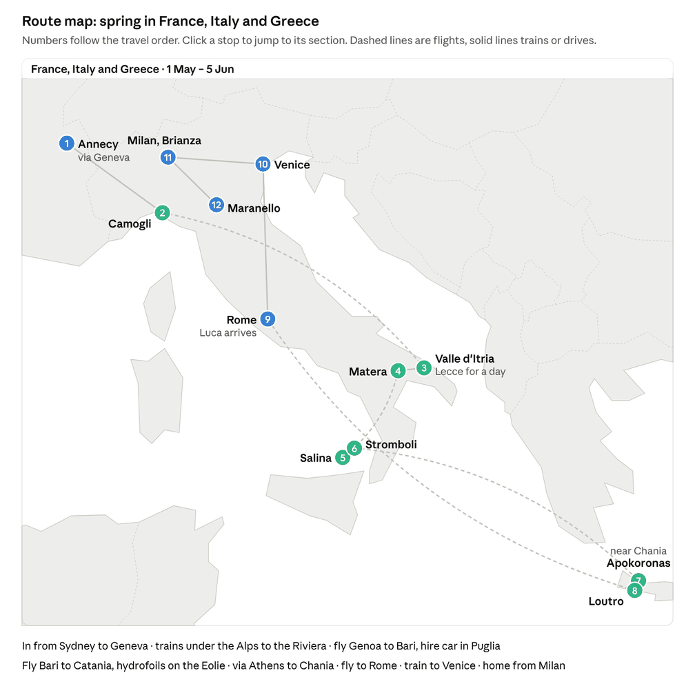
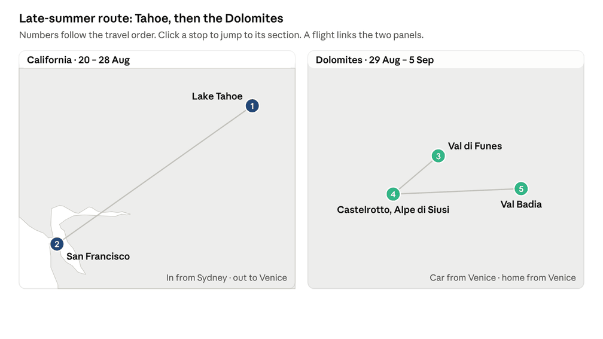

Route map
Spring runs north to south through Europe: Annecy, Turin, the Riviera, the Eolie, Puglia and Crete, then Rome, Venice and Milan with Luca. The late-summer trip is Tahoe and the Dolomites.


Jump to: Annecy · Turin and Liguria · Eolie · Puglia · Crete · Italy with Luca · Late-summer trip
Timeline
You fly out on Fri 30 Apr and home from Milan on Sat 5 Jun, landing Sun 6 Jun. Leave runs Fri 30 Apr to Fri 4 Jun, 26 working days, and you're back at work on Mon 7 Jun.
The plan at a glance
Twenty-six days of leave buy five weeks in Europe, Sat 1 May to Sat 5 Jun 2027, flying out on Fri 30 Apr. The route runs one way, north to south and back up to Milan: Annecy, the Riviera, the Eolie, Puglia and Crete with Kelly, then nine days with Luca from Rome to Milan. Kelly meets Luca in Rome and leaves for Maine on Fri 28 May.
Annecy, 1 – 5 May. Land in Geneva on Saturday for four nights; Giulia comes down from Paris when it suits her.
Turin and Liguria, 5 – 8 May. A night in Turin to break the train journey, then two midweek nights in Camogli for San Fruttuoso and Portofino.
Eolie, 8 – 14 May. Fly Genoa to Catania; Salina for four nights, then Stromboli for two.
Puglia, 14 – 20 May. Fly Catania to Bari; a masseria in the Valle d'Itria over the weekend, with Lecce as a day out, then Matera midweek.
Crete, 20 – 27 May. Via Athens to Chania; Apokoronas villages, then Loutro on the car-free south coast.
Italy with Luca and Vittoria, 27 May – 5 Jun. Fly into Rome on Thu 27 May, the day Luca lands; Kelly has a day with him before she flies on Fri 28. Three nights in Rome, a night in Venice, then Milan, Monza and Ferrari. Caroline collects Luca in Milan on Sat 5 Jun, and you land home Sun 6 Jun.
Giulia can take leave, so her visit to Annecy isn't tied to a holiday weekend; Annecy is about 3h45 from Paris by TGV.
Luca comes last, from Thu 27 May, so he misses part of NSW Term 2; that's Caroline's call. Vittoria is still at school, so she can come to Venice for the day on Sun 30 May, then joins you in the evenings and on 2 June, Italy's Republic Day. Luca doesn't overlap with Giulia unless she comes to Milan for a weekend.
Late-summer trip, 20 Aug – 7 Sep
Kelly's house at Lake Tahoe in high summer, then the Dolomites while the huts are open: a shorter second trip of 12 working days, now that the Eolie and Crete are in spring.
California, 20 – 28 Aug. Kelly's house at Lake Tahoe, then San Francisco.
Dolomites, 29 Aug – 5 Sep. Val di Funes, below the Alpe di Siusi, Val Badia; fly home from Venice on Sun 5 Sep, landing Tue 7 Sep.
Leave: 26 + 12 days, all long service, with about 8 left in the bank
| Trip | Away | Leave dates | Working days of leave | Public holidays inside |
|---|---|---|---|---|
| Spring trip | Fri 30 Apr – Sun 6 Jun | Fri 30 Apr – Fri 4 Jun | 26, long service | None; Anzac Day falls on Sun 25 Apr |
| Late-summer trip | Fri 20 Aug (night flight) – Tue 7 Sep | Mon 23 Aug – Tue 7 Sep | 12, long service | None |
| Total | 38 of long service, no annual leave |
Balances you gave, with no leave taken: 43.72 days of long service and 13.87 annual by 1 Feb 2027; 46.31 long service and 25.56 annual by 1 Sep 2027. After 26 days in spring and 12 in late summer, about 8 days of long service are left, and your annual leave is untouched. The late-summer trip flies out on a Friday night after work, so it costs no leave for the flight out.
Why these places
Every stop is there for one of three reasons: it was on your list, it's in its best season on these dates, or it gives the off-the-beaten-track version of a place instead of the headline one.
| Destination | Where you stay or go | Why these |
|---|---|---|
| France | Annecy | Annecy on your list: the lake, the old town and the mountains above it, and an easy train for Giulia from Paris. You leave before the French Ascension and 8 May long weekend. Paris was dropped. The train under the Alps to Italy avoids one-way car-hire fees. |
| Italy: Turin and Liguria | Turin, Camogli, Portofino, San Fruttuoso | Not on your list. Turin splits the long train day from Annecy: elegant, quieter than Milan, with the arcades, the cafés and the Egyptian Museum. Then two midweek days of coastal walking at about 18–21 °C, well before the beach season, different from your May 2026 Cinque Terre trip. |
| Italy: Puglia | The Valle d'Itria (Cisternino or Locorotondo), Lecce for a day, Matera | On your list. Mid-May is about 20–24 °C, before the heat and the summer crowds; the weekend goes to the countryside and Matera comes after it. |
| Italy: Eolie | Salina, Stromboli | On your list. Mid-May is about 22 °C and quiet before the June season, with a cool sea of about 19 °C; Salina is the quiet green one. |
| Greece: Crete | West Crete and its south coast | Crete on your list. Late May is about 25–27 °C with the sea around 21 °C, before the summer peak; villages and the car-free south coast instead of the resort strip. The Cyclades were dropped. |
| Italy: Rome | The centro storico (Monti or Campo de' Fiori) | Added for Luca's first Italy: the Colosseum, the Pantheon, the Trevi and St Peter's are the postcard set, done in three days. Caroline lands there with him the day you arrive from Crete, and Kelly flies out from there the next day. |
| Italy: Milan and Brianza | Concorezzo and Brianza, Milan, Monza, Modena and Maranello, Lake Como, a night in Venice | Milan on your list; the last week, with Luca, and Vittoria in the evenings and on 2 June. The day trips are built on Luca's love of cars, planes and machines. Venice is the one deliberately touristy stop, added for Luca's first visit, with a night there so you see it in the evening and early morning without the crowds. |
| Dolomites (late-summer trip) | Val di Funes, Val Gardena hamlets, Alpe di Siusi, Val Badia | On your list, but closed for walking from February to May. Late August and early September have the huts open and settled weather, as the August crowds thin. Lago di Braies and Seceda skipped. |
| USA (late-summer trip) | Lake Tahoe (Kelly's house), San Francisco | Kelly's house is at Tahoe. Late August is high summer at the lake, warm enough to swim, after California's schools have gone back and before Labor Day; San Francisco is the jump-off for Europe. Wildfire smoke is the risk at this time of year. |
Fixed dates and assumptions
The plan is set from the end: Luca's nine days from Rome to Milan and Kelly's Maine dates fix late May, and the trip opens in Annecy, where Giulia can visit when it suits her.
| Date (2027) | What | Effect on the plan |
|---|---|---|
| Sat 1 May | May Day, a French public holiday | Arrival day in Annecy; shops shut, locals out |
| 6 – 9 May | Ascension (Thu 6) and Victory Day (Sat 8) long weekend in France | You leave Annecy on Wed 5 May, before it |
| Late May | Giro d'Italia's final stage | Check whether it finishes in Milan or Rome |
| Thu 27 May – Sat 5 Jun | Caroline brings Luca to Rome | Luca's nine days, the last of the trip |
| 28 May – 6 Jun | Kelly in Maine for nine days | Kelly flies from Rome on Fri 28 May |
| Until early June | Vittoria at school (Lombardy calendar) | Venice for the day on Sun 30 May, then evenings and 2 June |
| 2 Jun | Republic Day in Italy | Maranello with Vittoria and Luca |
| Mid-Sep | Most Dolomites huts close around 20 Sep | Late-summer trip: the Dolomites at the turn of the month |
Assumptions, flag any that are wrong:
Leave counts in working days. Fly out on Fri 30 Apr and land in Geneva on Sat 1 May; Fri 30 Apr to Fri 4 Jun is 26 working days, with no NSW public holidays inside. Fly home from Milan on Sat 5 Jun, land in Sydney Sun 6 Jun, back at work Mon 7 Jun.
Kelly flies out with you on Fri 30 Apr and is with you until Fri 28 May. She then flies from Rome to Maine for nine days (28 May – 6 Jun) and home to Sydney from there.
Kelly would rather not spend long hours on buses or in cars, so road legs are kept short, with trains, hydrofoils or flights for the long hops.
Passports: Marco Italian and Australian, Kelly Australian and US, Luca Australian and British.
Caroline brings Luca to Rome on Thu 27 May and collects him in Milan on Sat 5 Jun to take him to Blackburn.
Comfortable, characterful mid-range places to stay: guesthouses, agriturismi, masserie. No chains or resorts.
Spring: Annecy, Turin and Liguria, the Eolie, Puglia and Crete, then Italy with Luca (1 May – 5 Jun)
Fly out on Fri 30 Apr and land in Geneva on Sat 1 May. Four nights in Annecy, where Giulia can come down from Paris, then Marco and Kelly have Turin, the Riviera, the Eolie, Puglia and Crete. Luca comes last: you and Kelly fly into Rome on Thu 27 May, the day Caroline lands with him. Kelly has a day with Luca and flies to Maine on Fri 28, then you go north to Venice and home to Brianza, with Vittoria in the evenings and on 2 June.
Annecy, with Giulia, 1 – 5 May (4 nights)
| Day | Where | What |
|---|---|---|
| Sat 1 | Annecy | Land in Geneva, then about 45 min by car or bus to Annecy. May Day is a French holiday, so expect locals out; the old town's canals in the evening |
| Sun 2 | Annecy | The lake path by bike to Talloires |
| Mon 3 | Annecy | The walk up Mont Veyrier above the lake (2–3 h); the Semnoz may still have snow near the top |
| Tue 4 | Annecy | A boat across the lake and lunch in a lakeside village |
| Wed 5 | Turin | Train to Chambéry (50 min), then the high-speed train under the Alps to Turin (about 2½ h); about 3½ h in all, in Turin by early afternoon |
Giulia can take leave, so she can come down from Paris by TGV (about 3h45) on whichever days suit her; the weekend of 1–2 May is the easiest. Early May in Annecy is about 15–20 °C with showers likely, and the lake is too cold to swim. You leave before the Ascension and 8 May long weekend (6–9 May), when the town fills.
Direct high-speed trains from Chambéry through Turin to Milan resumed in April 2025, after a 2023 landslide closed the line; Trenitalia runs four a day (Railin). Going by train avoids the large fee for dropping a French hire car in Italy.
Turin and Liguria, Marco and Kelly, 5 – 8 May (3 nights)
Wed 5 May: the train from Annecy to Turin, and a night there to split the journey. Thu 6 May: Turin to Genoa (about 2 h) and on to Camogli (about 30 min), worth checking for an Intercity that stops at Camogli and saves the change. Early May on the Riviera is about 18–21 °C, green and in flower, well before the beach season, and these are weekday nights. This stretch of coast is different from the Cinque Terre you saw in May 2026.
| Dates | Base | Nights | What to do |
|---|---|---|---|
| 5 – 6 May | Turin | 1 | The arcades of Via Po and Piazza San Carlo, a bicerin at Caffè Al Bicerin, the Egyptian Museum, and the lift up the Mole Antonelliana for the Alps at sunset. Thu 6 May: train to Genoa and Camogli, about 2½ h |
| 6 – 8 May | Camogli | 2 | The harbour and the focaccia di Recco on arrival. Next day the promontory path to San Fruttuoso abbey (2–3 h) and the boat on to Portofino, then back by boat or bus for sunset on the waterfront. Sat 8 May: 40 min by train to Genoa, then the airport bus |
Eolie, Marco and Kelly, 8 – 14 May (6 nights)
Sat 8 May: fly Genoa to Catania (Ryanair, about 1h45; not every day, so check the Saturday once the summer timetable is out), then the Giuntabus or Flibco coach from the airport to Milazzo port (about 2 h, 140 km) and the hydrofoil. Early to mid May is about 21–22 °C with the sea around 18–19 °C, cool for swimming; the islands are quiet before the June season, but the hydrofoils run a thinner spring timetable, so check Liberty Lines before booking.
| Dates | Base | Nights | What to do |
|---|---|---|---|
| 8 – 12 May | Salina | 4 | Monte Fossa delle Felci (962 m, about 3 h up), Pollara, capers and Malvasia, granita and pane cunzato in Lingua |
| 12 – 14 May | Stromboli | 2 | Sunset walk to the 400 m viewpoint with an authorised guide (about 5 h); the summit is closed to visitors. Boat to Ginostra. Fri 14 May: hydrofoil to Milazzo, coach to Catania airport, fly Catania to Bari (Ryanair, about 1h10) |
Puglia, Marco and Kelly, 14 – 20 May (6 nights, hire car)
Fri 14 May: land in Bari and pick up the car. Mid to late May in Puglia is about 22–25 °C, before the heat and the summer crowds. The weekend goes to the countryside (Pentecost, Sun 16 May, brings some German and Austrian visitors), and Matera comes midweek.
| Dates | Base | Nights | What to do |
|---|---|---|---|
| 14 – 18 May | Valle d'Itria (Cisternino or Locorotondo) | 4 | About 1 h from Bari. A masseria stay; white towns, dry-stone countryside by bike, Cisternino's butcher-grills. A day in Lecce (about 1 h) for the baroque old town and pasticciotto, and one for Polignano and the coast |
| 18 – 20 May | Matera (Basilicata) | 2 | About 1h15 by car. A cave room in the Sassi, the walk across the ravine in the Murgia park (2–3 h), the Sassi lit up at dusk. Thu 20 May: an hour to Bari airport, drop the car and fly Bari to Athens (Ryanair almost daily, plus Aegean and Volotea), then on to Chania |
Crete, Marco and Kelly, 20 – 27 May (7 nights, hire car)
Late May in western Crete is about 25–27 °C with the sea around 21 °C, warm but before the summer peak. The Samaria Gorge normally opens in May.
| Dates | Base | Nights | What to do |
|---|---|---|---|
| 20 – 23 May | Apokoronas village (Vamos or Gavalochori) | 3 | Chania's old harbour, White Mountain foothill villages |
| 23 – 26 May | Loutro, south coast | 3 | Car-free village reached by boat; the coast path to Chora Sfakion (about 2 h) and the Aradena gorge. Samaria (16 km, 5–7 h) if you want one big day |
| 26 – 27 May | Chania | 1 | Back near the airport. Thu 27 May: fly Chania to Rome, via Athens or nonstop if it runs |
Italy with Luca: Rome, Venice and Brianza, 27 May – 5 Jun
| Day | Where | What |
|---|---|---|
| Thu 27 | Rome | Fly in from Crete with Kelly; Caroline lands with Luca. An evening walk to Piazza Navona and a first gelato, all together |
| Fri 28 | Rome | Kelly flies Rome to Boston for Maine. The Colosseum and Forum (book the timed entry), the Pantheon; pizza al taglio and supplì. The Trevi only early, around 7 am, or skip it; the Spanish Steps skipped |
| Sat 29 | Rome | The climb up St Peter's dome and Castel Sant'Angelo; Trastevere in the evening |
| Sun 30 | Venice | Frecciarossa from Rome (about 3h45). The vaporetto down the Grand Canal at sunset and a gondola; sleep in Cannaregio or Castello. Vittoria could come for the day by train from Milan (about 2h25) |
| Mon 31 | Brianza | Early-morning Venice while it's empty and the Murano glass furnaces, then the train to Milan; Vittoria in the evening |
| Tue 1 | Milan | Science and Technology Museum (a real submarine, planes, trains, Leonardo's machines), the Duomo rooftop, the San Siro stadium tour |
| Wed 2 | Modena and Maranello | Republic Day, so Vittoria is free: the Enzo Ferrari and Ferrari museums, and Lamborghini's at Sant'Agata (30 min) |
| Thu 3 | Monza | The royal park and the Autodromo (check track-tour days); Vittoria in the evening |
| Fri 4 | Lake Como or Volandia | The funicular to Brunate and a boat on the lake, or the aviation museum by Malpensa; Luca's last evening with Vittoria |
| Sat 5 | Milan | Caroline collects Luca and they fly to Manchester; you fly home, landing Sun 6 Jun |
Sleeping a night in Venice also exempts you from the day-tripper access fee, which for 2027 is planned to start on Good Friday at up to €10 a head, pending approval in Rome (blue News).
Kelly arrives in Rome with you, has a day with Luca and flies to Maine on Fri 28 May. Vittoria can come to Venice for the Sunday, and has the evenings and Republic Day with you. Luca doesn't see Giulia unless she comes to Milan.
Handover with Caroline
Caroline brings Luca to Rome on Thu 27 May (from Sydney, or from Manchester if she goes to Blackburn first) and has the nine days to herself. On Sat 5 Jun she collects him in Milan and they fly to Manchester (about 2 h) for Blackburn; you fly home the same day.
If it suits Caroline better, you and Luca can fly Milan to Manchester together on Sat 5 Jun and you fly home from Manchester.
Paperwork for the family leg
When Luca travels with only Marco, carry a signed consent letter from Caroline and a copy of his birth certificate; airlines and borders can ask for them.
Luca enters the UK on his British passport. Kelly needs a UK ETA only if she goes to London.
Marco travels in Europe on his Italian passport, so the EU's coming ETIAS authorisation doesn't apply to him. Kelly will need it on either of her passports once it starts; there's no start date yet, and reporting points to sometime in 2027 (Navan).
Late-summer trip: 20 Aug – 7 Sep 2027
California comes first, while Tahoe is in high summer and the lake is warm enough to swim, then the Dolomites while the huts are open and the August crowds thin. Sydney → San Francisco → Venice → Sydney runs east the whole way, which suits a round-the-world ticket.
Leave: fly Qantas nonstop to San Francisco on Fri 20 Aug at 21:25, after work, landing at 17:45 the same Friday across the date line. Mon 23 Aug to Tue 7 Sep is 12 working days, all long service leave. You fly home from Venice on Sun 5 Sep and land in Sydney on Tue 7 Sep.
| # | Leg | Dates | Nights | Why it sits here |
|---|---|---|---|---|
| 1 | California | 20 – 28 Aug | 8 | First, while the lake is warmest; Kelly's house at Tahoe, then San Francisco for the flight to Europe, before the Labor Day weekend |
| 2 | Dolomites | 29 Aug – 5 Sep | 7 | Before most huts and lifts close around 20 Sep, in settled weather as the August crowds thin |
California, 20 – 28 Aug (hire car)
Kelly's house at Lake Tahoe is the base, then two nights in San Francisco before the flight to Europe.
| Dates | Base | Nights | What to do |
|---|---|---|---|
| 20 – 26 Aug | Lake Tahoe, Kelly's house | 6 | Land at San Francisco at 17:45 on Fri 20 Aug, hire a car at the airport and drive up that evening or on Saturday morning (about 3.5 h). High summer: about 27 °C, the lake warm enough to swim, walks on the Tahoe Rim Trail and into Desolation Wilderness. Late August is the peak of the Sierra fire season, so check the air quality and fire maps before you go |
| 26 – 28 Aug | San Francisco | 2 | Drive or take the train down (about 3.5 h). The Lands End coastal trail, the Mission, the Ferry Building |
Sat 28 Aug: fly San Francisco to Venice overnight through a European hub, landing Sun 29 Aug. You're gone before the Labor Day weekend (4–6 Sep) fills the lake.
Dolomites, 29 Aug – 5 Sep (hire car from Venice)
Land in Venice on Sun 29 Aug and pick up the car. The last days of August still have the tail of the Italian and German holidays, so walk early and keep to these quieter valleys.
| Dates | Base | Nights | What to do |
|---|---|---|---|
| 29 – 31 Aug | Val di Funes (Santa Maddalena or San Pietro) | 2 | Drive from Venice, about 3 h. The Adolf Munkel trail under the Odle peaks (about 3 h) and lunch at the Geisler Alm hut |
| 31 Aug – 3 Sep | Castelrotto or Siusi, below the Alpe di Siusi | 3 | Cable car up to Europe's largest high meadow; hut-to-hut walks towards the Sciliar; the Val Gardena hamlets on the other side. Seceda skipped for its queues |
| 3 – 5 Sep | Val Badia (La Villa or Pedraces) | 2 | Ladin villages and food; the Armentara meadows below Sas dla Crusc (about 3 h). Lago di Braies skipped |
Sun 5 Sep: drive back to Venice (about 2.5 h), drop the car and fly home, one or two stops, landing Tue 7 Sep.
Options
Giulia: her Pasteur year ends in September, so she could join the Dolomites.
Flights: the round-the-world ticket covers Sydney to San Francisco, San Francisco to Venice and Venice to Sydney.
Flights
Priced on Google Flights on Sun 25 Oct 2026: A$ per person including taxes, for the cheapest fare on the flight that fits the plan. Ryanair, Wizz and Scoot fares don't include bags. A dash means economy on a short hop. Most spring legs are still to price on the new dates.
Spring trip
| Leg | Best fit | Times | Economy | Business |
|---|---|---|---|---|
| Sydney → Geneva, both, Fri 30 Apr | One stop via the Gulf or Asia, landing Sat 1 May | — | not yet priced | not yet priced |
| Genoa → Catania, Sat 8 May | Ryanair nonstop | recheck the Saturday schedule | 102 + bag (priced for a Thursday) | — |
| Catania → Bari, Fri 14 May | Nonstop when it runs, otherwise via Rome | about 1 h | not yet priced | — |
| Bari → Athens → Chania, Thu 20 May | Aegean via Athens | about 4 h | about 225 (priced for September) | — |
| Chania → Rome, both, Thu 27 May | Via Athens, or nonstop if it runs | — | not yet priced | — |
| Rome → Maine, Kelly, Fri 28 May | One stop via Boston or New York | — | not yet priced | — |
| Milan → Sydney, Marco, Sat 5 Jun | One or two stops, landing Sun 6 Jun | — | not yet priced | not yet priced |
| Maine → Sydney, Kelly, Sun 6 Jun | Portland or Boston, via the US west coast | — | not yet priced | not yet priced |
Late-summer trip
| Leg | Best fit | Times | Economy | Business |
|---|---|---|---|---|
| Sydney → San Francisco, Fri 20 Aug | Qantas nonstop; or United | 21:25 → 17:45; 10:20 → 06:50 | 1,402; 1,624 | 8,571; 9,731 |
| San Francisco → Venice, Sat 28 Aug | Lufthansa, one stop | 14:40 → 13:50 Sun, 14h10 | 698 | 3,606 (TAP via Lisbon) |
| Venice → Sydney, Sun 5 Sep | One or two stops, landing Tue 7 Sep | — | not yet priced | not yet priced |
Priced so far, per person: about 2,100 in economy and 12,200 in business for Sydney → San Francisco → Venice, plus about 100 for the Genoa → Catania hop. Everything else is still to price.
Where the hidden savings are
Skip Reno. Pick up a car at San Francisco airport, drive to Tahoe and back (about 3.5 h each way) and return it there before the flight to Venice: no extra flight and no one-way fee.
Turkish Airlines' round-the-world fare for the late-summer trip. It goes from Australia via North America and Istanbul to Europe, and back via Istanbul and Asia, with free stopovers: the late-summer shape (Sydney → San Francisco, stop, → Istanbul → Venice; Venice → Istanbul → Singapore → Sydney). Australian Frequent Flyer's sample of that shape cost 2,105 in economy and 7,862 in business in 2024. It's sold through agents only and prices may have moved, so get a quote before buying the late-summer legs.
Mix airlines in business: TAP via Lisbon, San Francisco → Venice, is 3,606 against 5,306 on United.
Book the bag with the low-cost hops (Ryanair Genoa → Catania, Catania → Bari and Bari → Athens); it costs more at the airport.
Leave buffers on separate tickets. Bags don't transfer between them, so allow at least three hours, or a night, on self-made connections.
Checked and not worth it
A return starting in Italy to cover both the June flight home and the flight back out: about 3,000, more than two one-ways.
One round-the-world ticket for both trips: they now run in opposite directions.
Hidden-city tricks: they put the later legs and checked bags at risk.
When to book
Now: the spring long-haul as one open-jaw return on one airline (Sydney → Geneva, Milan → Sydney), which usually prices well below two one-ways, and Kelly's Rome → Maine. Get the Turkish quote before booking Sydney → San Francisco, San Francisco → Venice and Venice → Sydney.
Two to four months out: Ryanair, Aegean, the Catania → Milazzo coach and the Liberty Lines hydrofoils.
Also early: Annecy, Turin, Camogli, the Puglia masseria, Salina, Loutro, Rome and the night in Venice.
Extensions worth considering
Each one is on the route and in season, and would replace a few days elsewhere rather than add leave.
| Extension | Fits where | Days | Why it suits you |
|---|---|---|---|
| Valle Maggia, Ticino | Spring trip, instead of Liguria | 2–3 | Granite hamlets and waterfalls above Lake Maggiore, in Italian-speaking Switzerland, close to Milan |
| Etna's north side and the Nebrodi | Spring trip, before the Eolie (you fly into Catania anyway) | 2–3 | Lava fields, Randazzo, beech forests, black pigs and provola; Sicily's quiet interior |
| Mani peninsula, Peloponnese | Spring trip, instead of the Eolie | 3–4 | Stone tower villages, coastal mule paths, very few visitors |
| Big Island of Hawaii | Late-summer trip, Sydney to San Francisco (needs 4–5 more days of leave) | 4–5 | Kilauea crater walks, lava coast, Waipio valley |
Open questions
Caroline: is she happy handing Luca over in Rome on Thu 27 May and collecting him in Milan on Sat 5 Jun for the UK?
Caroline: the consent letter for Luca's nine days with Marco.
Silvia and Vittoria: Venice for the day on Sun 30 May, evenings from 31 May and Republic Day, 2 June.
Giulia: which days in Annecy (1 – 5 May); could she come to Milan for a weekend to see Luca; and would she join the Dolomites in September?
Kelly: fly Rome to Boston on Fri 28 May, then on to Maine?
Economy or business on the long legs? Any Qantas, Velocity or Amex points between you, since business on points could beat everything in Flights?